There are 4 basic classes of fluids that can be used in CoolProp, an example is provided for each one.
All the fluids listed in Pure-Fluids and Pseudo-Pure-Fluids sections above can be used. To use one of these fluids, do something like
In [1]: from CoolProp.CoolProp import Props
#Density of dry air at 1 atm. and 25C
In [2]: Props('D','T',298,'P',101.325,'Air')
Out[2]: 1.1849162390439558
You can also use any of the aliases of the fluids that are the listed on the fluid page. For instance, R717 is the refrigerant number for ammonia
In [3]: from CoolProp.CoolProp import Props
#Density of saturated ammonia vapor at 1 atm.
In [4]: Props('D','Q',1,'P',101.325,'R717')
Out[4]: 0.8895485825530962
#Density of saturated ammonia vapor at 1 atm.
In [5]: Props('D','Q',1,'P',101.325,'Ammonia')
Out[5]: 0.8895485825530962
If you are on Windows and have REFPROP installed, you can use it with CoolProp. REFPROP needs to be installed in c:\Program Files\REFPROP. If it is somewhere else, just copy it to this location.
It is also possible to use REFPROP on Linux. Please follow the instructions from https://github.com/jowr/librefprop.so to install the library from Fortran sources. Additionally, you also need to copy the fluid and mixture files to /opt/refprop.
All the pure fluids in REFPROP are used just like the CoolProp fluids except that “REFPROP-” is added at the beginning of the fluid name. You can use any fluid that is included in REFPROP, but you must use the REFPROP fluid file name. For CoolProp Fluids, you can use the get_REFPROPName() function to get the REFPROP name for the fluid.
In [6]: from CoolProp.CoolProp import Props
#Saturated isobutane vapor density at 1 atmosphere
In [7]: Props('D','Q',1,'P',101.325,'REFPROP-ISOBUTAN')
Out[7]: 2.826600375148689
You can also use mixtures in REFPROP, there is a special format for the fluid name. The fluid name is set up like this: "REFPROP-MIX:R32[0.697615]&R125[0.302385]" - this is R410A. The numbers within the brackets are the mole fractions of the components. They must add up to 1.0
In [8]: from CoolProp.CoolProp import Props
#Saturated R410 vapor density at 1 atmosphere using the mixture properties
In [9]: Props('D','Q',1,'P',101.325,'REFPROP-MIX:R32[0.697615]&R125[0.302385]')
Out[9]: 4.174151979345524
There is also a selection of incompressible liquids implemented. These only allow for calls with temperature and pressure as input and provide only a subset of thermophysical properties, namely: density, heat capacity, internal energy, enthalpy, entropy, viscosity and thermal conductivity. Hence, the available output keys for the Props function are: “D”, “C”, “U”, “H”, “S”, “V”, “L”, “Tmin”, Tmax” and “Psat”. An internal iteration allows us to use enthalpy and pressure as inputs, but be aware of the reduced computational efficiency.
In [10]: from CoolProp.CoolProp import Props
#Density of HFE-7100 at 300 K and 1 atm.
In [11]: Props('D','T',300,'P',101.325,'HFE')
Out[11]: 1546.8245
For refrigeration applications, 8 fluids were implemented from Aake Melinder “Properties of Secondary Working Fluids for Indirect Systems” published in 2010 by IIR and coefficients are obtained from a fit between -80 and +100 degrees Celsius.
| Fluid Name | Description |
|---|---|
| DEB | Diethyl Benzene |
| HCM | Hydrocarbon Mixture (Therminol D12 Solutia) |
| HFE | Hydrofluoroether HFE-7100 |
| PMS1 | Polydimethylsiloxan 1. |
| PMS2 | Polydimethylsiloxan 2. |
| SAB | Synthetic alkyl benzene |
| HCB | Hydrocarbon blend (Dynalene MV) |
| TCO | Terpene from citrus oils |
There are also a few high temperature heat transfer fluids with individual temperature ranges. Please refer to the file IncompLiquid.h for a complete overview. For these fluids, information from commercial data sheets was used to obtain coefficients.
| Fluid Name | Description |
|---|---|
| TD12 | Therminol D12 (-85 to +230 C) |
| TVP1 | Therminol VP-1 (+12 to +397 C) |
| T72 | Therminol 72 (-10 to +380 C) |
| T66 | Therminol 66 (0 to +345 C) |
| DowJ | Dowtherm J (-80 to +345 C) |
| DowQ | Dowtherm Q (-35 to +360 C) |
| TX22 | Texatherm 22 (0 to +350 C) |
| NaK | Nitrate Salt Blend (+300 to +600 C) |
| XLT | Syltherm XLT (-100 to +260 C) |
| HC10 | Dynalene HC-10 (-10 to +218 C) |
| HC20 | Dynalene HC-20 (-20 to +210 C) |
| HC30 | Dynalene HC-30 (-30 to +210 C) |
| HC40 | Dynalene HC-40 (-40 to +200 C) |
| HC50 | Dynalene HC-50 (-50 to +210 C) |
All fluids are implemented with polynomials for density and heat capacity with typically 4 coefficients and hence a third order polynomial. Thermal conductivity is a second order polynomial and viscosity and vapour pressure are exponential functions.
![\rho &= \sum_{i=0}^n C_{\rho}[i] \cdot T^i \\
c &= \sum_{i=0}^n C_{c}[i] \cdot T^i \\
u &= \int_{0}^{1} c\left( T \right) dT
= \sum_{i=0}^n \frac{1}{i+1} \cdot C_{c}[i]
\cdot \left( T_1^{i+1} - T_0^{i+1} \right) \\
s &= \int_{0}^{1} \frac{c\left( T \right)}{T} dT
= C_{c}[0] \cdot \ln\left(\frac{T_1}{T_0}\right)
+ \sum_{i=0}^{n-1} \frac{1}{i+1} \cdot C_{c}[i+1]
\cdot \left( T_1^{i+1} - T_0^{i+1} \right) \\
\lambda &= \sum_{i=0}^n C_{\lambda}[i] \cdot T^i \\
\mu &= \exp\left( \frac{C_{\mu}[0]}{T+C_{\mu}[1]} - C_{\mu}[2] \right) \\
p_{sat} &= \exp\left( \frac{C_{sat}[0]}{T+C_{sat}[1]} - C_{sat}[2] \right) \\](../_images/math/907f87959f99100ca9cd544a88228bf05d9e836e.png)
All the brines and solutions can be accessed through the Props function. To use them, the fluid name is something like "MEG-20%" which is a 20% by mass ethylene glycol solution. Note that these fluids have an arbitrary reference state: Be careful with enthalpy and entropy calculations. Again, only temperature and pressure inputs are supported directly to calculate the same subset of thermophysical properties as above , namely: density, heat capacity, internal energy, enthalpy, entropy, viscosity and thermal conductivity. Hence, the available output keys for the Props function are: “D”, “C”, “U”, “H”, “S”, “V”, “L”, “Tmin”, Tmax” and “Tfreeze”. An internal iteration allows us to use enthalpy and pressure as inputs, but be aware of the reduced computational efficiency.
In [12]: from CoolProp.CoolProp import Props
#Specific heat 20% mass ethylene glycol solution at 300 K and 1 atm.
In [13]: Props('C','T',300,'P',101.325,'MEG-20%')
Out[13]: 3.908642483652564
A number of aqueous solutions are implemented using the coefficients from Aake Melinder “Properties of Secondary Working Fluids for Indirect Systems” published in 2010 by IIR. According to the book, 2D polynomials are given in a form that satisfies 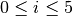, 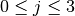 and 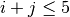 yielding a triangular matrix of coefficients. It is only for the freezing temperature calculation that the implemented procedures differ from what is presentedt in Melinder’s book the dependency on the current temperature is removed. In CoolProp, 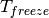 only depends on concentration.
| Melinder Fluids | Description | max. T | max. x |
|---|---|---|---|
| MEG | Ethylene Glycol (C2H6O2) | +100 C | 60 % |
| MPG | Propylene Glycol (C3H8O2) | +100 C | 60 % |
| MEA | Ethyl Alcohol, Ethanol (C2H6O) | +40 C | 60 % |
| MMA | Methyl Alcohol, Methanol (CH4O) | +40 C | 60 % |
| MGL | Glycerol (C3H8O3) | +40 C | 60 % |
| MAM | Ammonia (NH3) | +30 C | 30 % |
| MKC | Potassium Carbonate (K2CO3) | +40 C | 40 % |
| MCA | Calcium Chloride (CaCl2) | +40 C | 30 % |
| MMG | Magnesium Chloride (MgCl2) | +40 C | 30 % |
| MNA | Sodium Chloride (NaCl) | +40 C | 23 % |
| MKA | Potassium Acetate (CH3CO2K) | +40 C | 45 % |
| MKF | Potassium Formate (CHKO2) | +40 C | 48 % |
| MLI | Lithium Chloride (LiCl) | +40 C | 24 % |
Furthermore, there is a number of other secondary fluids that can be accessed in the same way. Most information is based on the data compiled by Morten Juel Skovrup in his SecCool software provided by his employer IPU. The coefficient matrix of the SecCool-based fluids has the same structure as mentioned above.
For slurry ice, the concentration  refers to the solid content and the heat capacity includes the heat of fusion.
It might be necessary to adjust the solid content during heat transfer. The implementation is based on the data available
in SecCool, which was originally recorded at the Danish Technological Institute (DTI).
refers to the solid content and the heat capacity includes the heat of fusion.
It might be necessary to adjust the solid content during heat transfer. The implementation is based on the data available
in SecCool, which was originally recorded at the Danish Technological Institute (DTI).
| SecCool Fluids | Description | max. T | max. x |
|---|---|---|---|
| ZiAC | ZitrecAC (corrosion inhibitor) | +100 C | 50 % |
| IceEA | Ethanol-water mixture with slurry ice | -10 C | 35 % |
| IcePG | Propylene glycol-water mixture with slurry ice | -10 C | 35 % |
| IceNA | Sodium chloride-water mixture with slurry ice | -5 C | 35 % |
| PK2000 | Pekasol 2000 (Potassium acetate and formate) | +100 C | 100 % |
In both of the above cases,  is the exponent for the concentration and
is the exponent for the concentration and  is used with the temperature
is used with the temperature  . Properties are modelled with the following polynomials:
. Properties are modelled with the following polynomials:
![\rho &= \sum_{i=0}^n x^i \cdot \sum_{j=0}^m C_{\rho}[i,j] \cdot T^j \\
c &= \sum_{i=0}^n x^i \cdot \sum_{j=0}^m C_{c}[i,j] \cdot T^j \\
u &= \int_{0}^{1} c\left( x,T \right) dT
= \sum_{i=0}^n x^i \cdot \sum_{j=0}^m \frac{1}{j+1} \cdot C_{c}[i,j]
\cdot \left( T_1^{j+1} - T_0^{j+1} \right) \\
s &= \int_{0}^{1} \frac{c\left( x,T \right)}{T} dT
= \sum_{i=0}^n x^i \cdot \left(
C_{c}[i,0] \cdot \ln\left(\frac{T_1}{T_0}\right)
+ \sum_{j=0}^{m-1} \frac{1}{j+1} \cdot C_{c}[i,j+1] \cdot \left( T_1^{j+1} - T_0^{j+1} \right)
\right) \\
\lambda &= \sum_{i=0}^n x^i \cdot \sum_{j=0}^m C_{\lambda}[i,j] \cdot T^j \\
\mu &= \exp \left( \sum_{i=0}^n x^i \cdot \sum_{j=0}^m C_{\mu}[i,j] \cdot T^j \right) \\
T_{freeze} &= \sum_{i=0}^n C_{freeze}[i] \cdot x^i \\](../_images/math/e9e636b0838ae537553c96c26e43b8676f94058b.png)
Using a centered approach for the independent variables,
the fit quality can be enhanced. Therefore, all solutions have a reference temperature and concentration
in the original work by Melinder and Skovrup as well as in CoolProp: 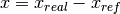
and 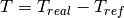, this technique does not affect the calculation
of the derived quantity internal energy since the formula contains temperature differences.
However, integrating 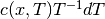 for the entropy requires some changes due to
the logarithm. To structure the problem, we introduce a variable 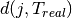, which will be expressed by a third sum.
As a first step for simplification, one has to expand the the binomial 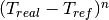 to a series.
Only containing and 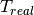,  is independent from and can be
computed outside the loop for enhanced computational efficiency. An integration of the expanded binomial
then yields the final factor
is independent from and can be
computed outside the loop for enhanced computational efficiency. An integration of the expanded binomial
then yields the final factor  to be multiplied with the other coefficients and the concentration.
to be multiplied with the other coefficients and the concentration.
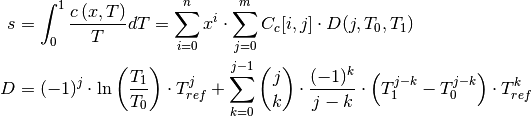